Corporate Bonds & Credit Spreads
Investment-grade and junk credit spreads over the 10-year Treasury as leading indicators to GDP and the S&P 500
The premium at which corporate bonds trade over the 10-year Treasury prices default risk, and in aggregate it leads GDP, earnings and equities: widening spreads warn of contraction, tightening spreads signal expansion.
The gist
- A corporate bond is company debt; it yields a premium over government debt (the 10-year Treasury) to compensate for the higher risk of default. The US corporate bond market is the largest in the world.
- The credit spread is that premium over the 10-year Treasury. Set by the free market in the secondary market, it is a leading indicator (not always) to GDP growth, corporate earnings and risk assets like the S&P 500.
- Ratings agencies (Moody's, S&P, Fitch) rate creditworthiness AAA down to CCC. AAA-to-BBB is investment grade; below that is 'junk' / non-investment grade; high yield starts at BB+; CCC or lower is the junkiest, highest default risk.
- Watch spreads by tier AND compare tiers to each other. At filming: AA ~71bp over the 10-year, BBB ~108bp (a 37bp premium over AA), CCC ~200bp premium. The junk (CCC) moves first and biggest.
- Transmission to equities: a spread blowout raises the cost of corporate debt, lowering expected future cash flows (the DCF numerator) and therefore present values; cheaper money is expansionary, expensive money contractionary.
- Caveat: there is no rulebook forcing a buy/sell when spreads widen or tighten. The Fed watches the same signals and can intervene, so use credit spreads alongside real rates, the yield curve and the VIX.
What is a corporate bond?
- The prior video covered government / sovereign bonds (a government borrowing from the private sector); here we look at companies borrowing from the private sector and using them in aggregate as leading indicators to the economy and equities (S&P 500).
- A corporate bond is simply debt a company issues to raise capital for operations or growth. Investors lend the principal, receive coupons (interest) over the maturity, and get the principal back at maturity.
- Yields on corporate debt trade at a premium to government benchmarks because of the higher company risk of default.
- They work exactly like government bonds, except the issuer is a corporation.
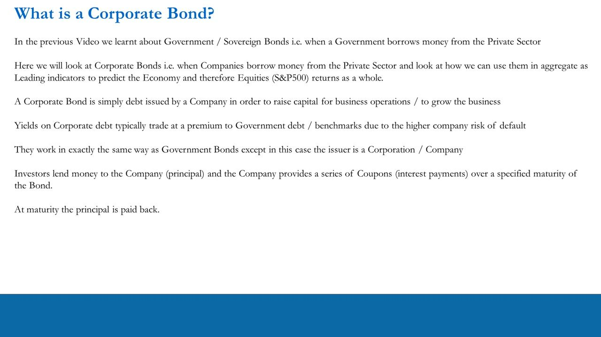
The US corporate bond market and ratings
- The US corporate bond market is the largest in the world and the most important corporate debt market, with a massive impact on US and global liquidity and GDP.
- Corporates often prefer debt over equity financing because it is cheaper and does not dilute current shareholders.
- Before issuance, a bond's creditworthiness is reviewed by ratings agencies.
- That rating largely determines the level of interest at which the bond is issued relative to the risk-free rate (the 10-year Treasury) — i.e. the risk premium over the risk-free rate.
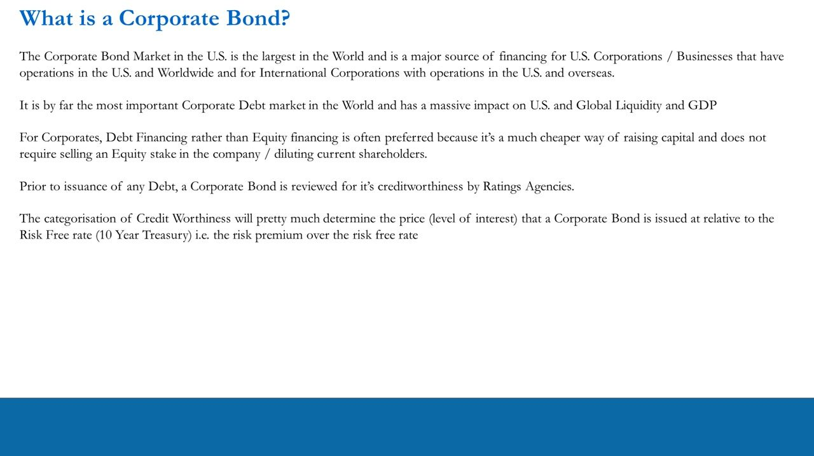
What is a credit spread?
- Once issued in the primary market, a bond trades in the secondary market where the free market sets its price (yield).
- The yield/premium versus the benchmark 10-year Treasury is driven by economic conditions (top-down), business and sector performance (bottom-up), benchmark rates themselves and liquidity.
- Like the government yield curve, the spread at which a corporate bond trades over the benchmark is important for gauging risk sentiment / future expectations.
- That makes it a leading indicator to GDP growth, corporate earnings and risk assets (equities, S&P 500).
Widening spreads mean the market perceives higher contraction risk and sells corporate bonds (yields rise) — a risk-off signal that typically feeds through to equities selling off. Tightening spreads mean lower perceived risk / expansion, and equities tend to rise.
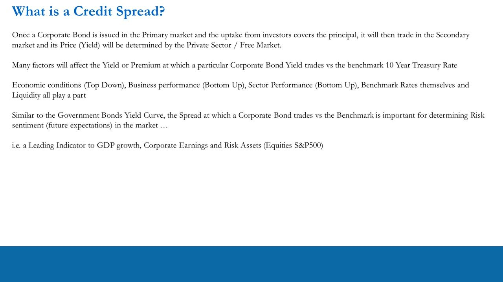
Credit ratings: investment grade vs junk
- Ratings run from AAA (highest creditworthiness, tightest spreads) down to CCC; the two grades are investment grade and non-investment grade.
- Investment grade spans AAA to BBB; BBB is the lower end of investment grade and yields at a premium to AAA.
- Agencies use different terminology: e.g. Moody's Aa1 = S&P/Fitch AA+; Moody's lowest investment grade Baa3 = S&P/Fitch BBB-. The mapping table gives the equivalent notch for any agency.
- Anything non-investment grade is 'junk'. High yield ratings begin at BB+.
- CCC or lower = the 'junkiest of the junk' — the highest risk of default.
The slide's mapping table covers the junk (non-investment-grade) scale across Moody's, S&P, Bloomberg, Fitch, DBRS, R&I, JCR, A.M. Best and Kroll — from best junk (Ba1/BB+) down to default (C/D/DDD).
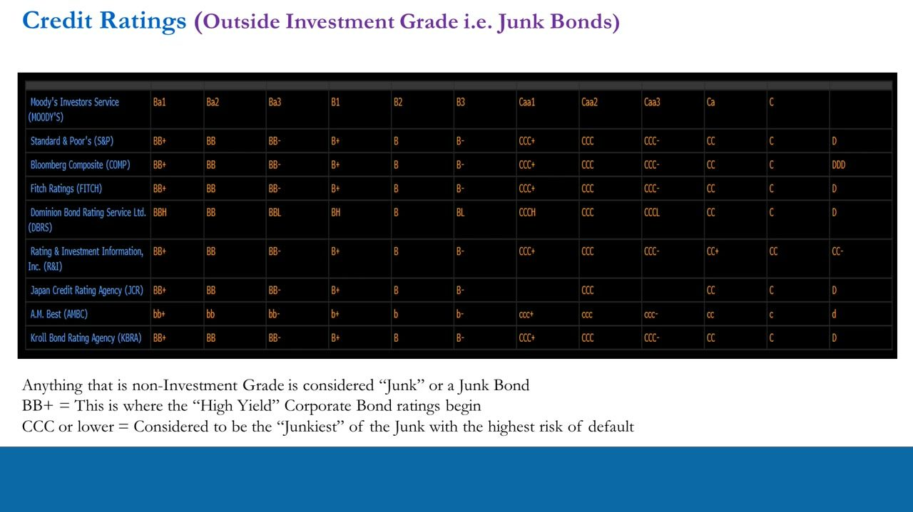
Aggregate corporate bond indices
- Just as the S&P 500 aggregates the top 500 US stocks, credit indices aggregate the yields on the most widely traded credits.
- Indices can be split by operational sector (financials, industrials) but more commonly by credit quality: investment grade, high yield / junk, and 'cross-over' credits in between.
- Aggregate corporate bond indices often — but not always — act as leading indicators to risk assets like the S&P 500.
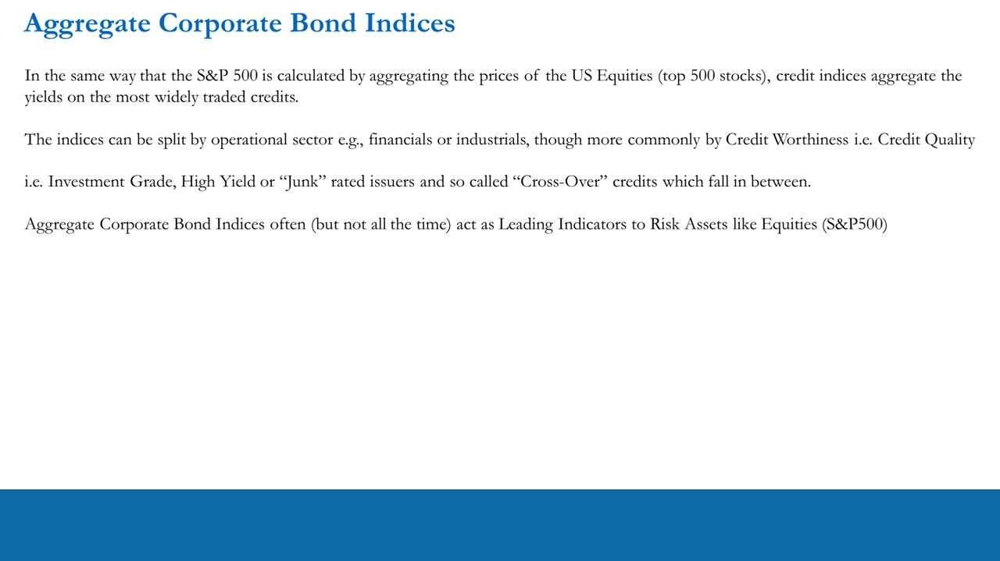
AA index spread over the 10-year (CSI A)
- Bloomberg CSI A Index: the BVAL USD Composite (A) 10-year yield minus the US Generic Government 10-year yield.
- At filming the AA index traded at 0.715% — 71 basis points over the 10-year Treasury.
- The Feb 2020-Feb 2021 chart shows the spread ~0.7 pre-COVID, a spike to a high of 2.5998 on 03/20/20, a secondary bump, then a decline back to ~0.7 (average 1.0798, low 0.6678).
- Big blowouts in this spread mark economic stress: it led the 2008 GFC, blew out in 2011, and spiked hard in 2020 before massive Fed intervention brought it back down.
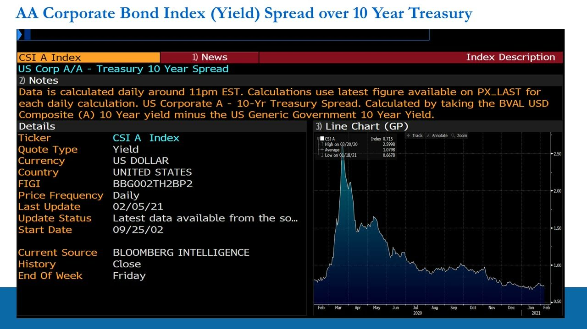
CCC (junk) index spread: junk moves first and biggest
- Bloomberg CCC index (I34803), OAS to Treasury: 2.95% at filming (index OAS 2.946443, high 9.801755 on 03/20/20, average 3.948185).
- Compare tiers to each other, not just each versus the 10-year: BBB was ~108bp (a 37bp premium over the 71bp AA), and CCC was roughly a 200bp premium over BBB/AA.
- The CCC spread moves the most: in 2014-15 it went from ~300bp to ~700bp (a full 400bp) before returning to ~300bp in 2017; in 2020 it went from ~300bp almost to 1000bp (~10%).
- CCC companies have the worst-rated fundamentals, so they are the most sensitive and 'very often, it's the junk that moves first' — making CCC spreads very important to watch.
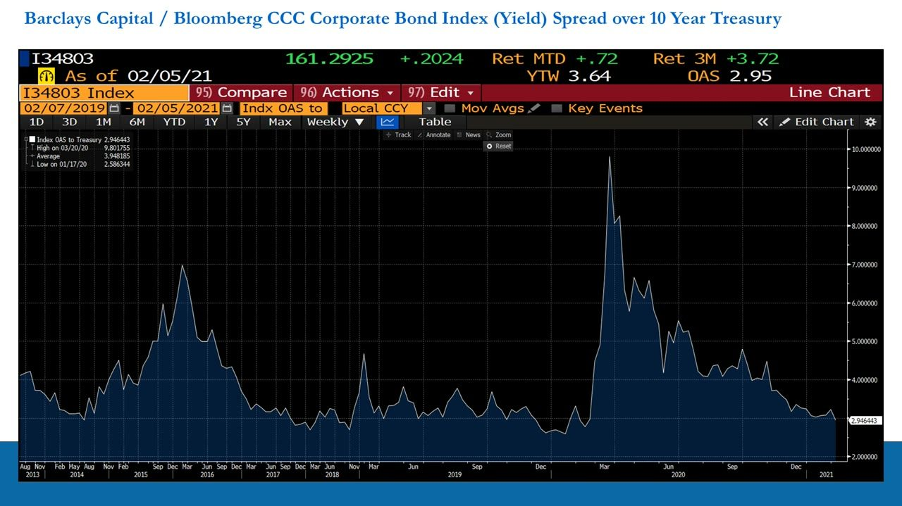
FRED spreads: BBB and CCC option-adjusted spread (OAS)
- The ICE BofA indices are freely available on FRED. BBB OAS (investment grade, rating BBB) read 1.25% on 2021-02-04: ~3.0 in 2016, ~1.2-1.5 in 2018-19, a vertical spike to ~4.9 in March 2020, then tightening back to ~1.25.
- CCC & Lower OAS (below investment grade, CCC or below) read 7.09% on 2021-02-03: ~20 in early 2016, down to ~7.5, up to ~10 in 2019, a spike to ~19-20 in March 2020, then decline to ~7.09.
- The OAS spikes coincide with US recession shading — credit stress and equity stress arrive together.
OAS (option-adjusted spread) adjusts for embedded bond options; these FRED series let a retail trader track the same investment-grade (BBB) and junk (CCC) credit spreads Anton uses on Bloomberg.
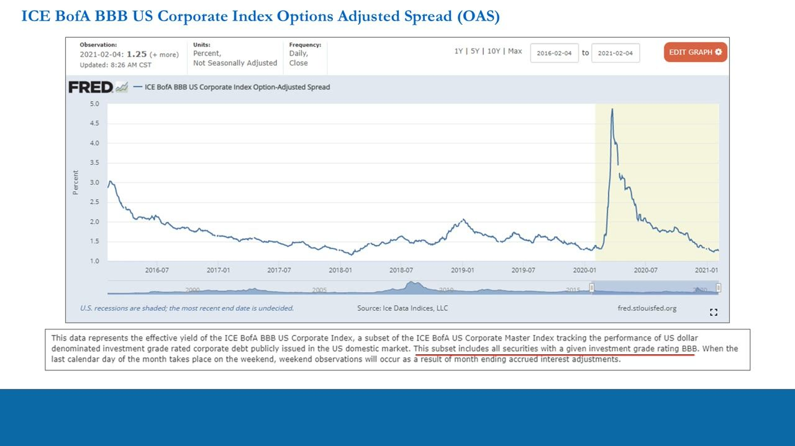
Why spreads lead equities: the DCF transmission and the Fed
- The cost of money for corporates flows into the DCF: a spread blowout makes debt more expensive, lowering expected future cash flows (the numerator); discounting a lower numerator at the same risk-free rate gives a lower present value (and the reverse for cheaper debt).
- A second, compounding dynamic: when money is cheaper, participants borrow more (expansionary); when it is expensive, they borrow less (contractionary).
- Central banks / governments know this and continually manipulate the supply of funds (real rates) via official rates (conventional policy) or by intervening in bond markets (unconventional policy).
- This is why corporate bond indices lead equity valuations at times (not always) — the Fed is watching the same things you are, and it is often about how quickly they react.
- Central bank actions, usually outside expectations, can panic markets as much as placate them.
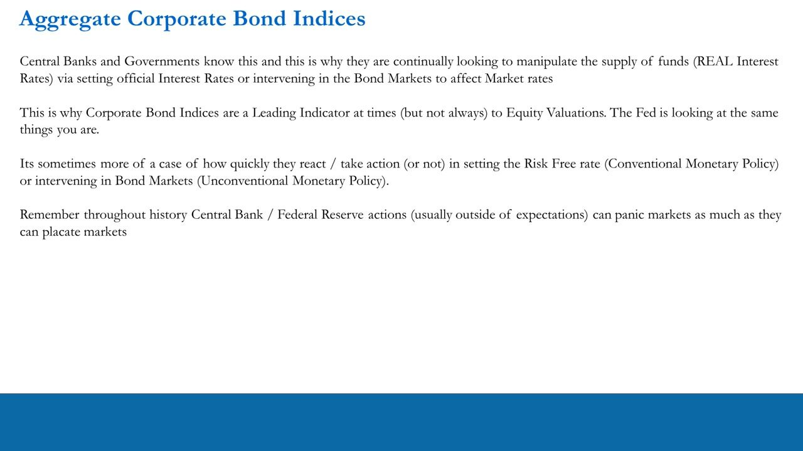
Corporate bond products available to retail
- Bond products are limited for speculation within a trader's time frame: low volatility and a small opportunity set (per the IPLT video series), so they can't source many trade ideas.
- Retail traders use them two ways: (1) as indicators of expansion/contraction alongside real rates, the Treasury yield curve and credit spreads; (2) as turbo hedges to portfolios or very short-term directional bets at economic turning points, getting leverage via options.
- Products: LQD (iShares iBoxx $ Investment Grade — biggest, most liquid); VCSH / VCIT / VCLT (Vanguard short / intermediate / long-term IG); HYG (high yield, ratings B to BB, similar to BBB/Baa aggregate); JNK (junk, C to CCC, similar to CCC aggregate).
- Do your own homework: make sure any product is liquid, tradable and has an active options market. Apply the same principles to international corporate bonds (Europe, Japan, UK) — use this video as a template.
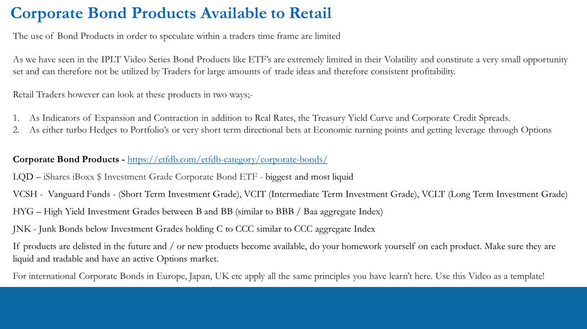
Tying it together: the caveat and the systematic framework
- Caveat: due to Fed actions there is no rulebook stating what you MUST do in equities when short vs long real rates diverge, when the yield curve flattens/steepens, or when credit spreads widen/tighten.
- Real rates, the yield curve and credit spreads are leading indicators to economic expansion/contraction, market risk/direction AND possible Fed actions — use them together, and in conjunction with the VIX in transition.
- The Pro-Trader Systematic Framework: Fundamentals -> Timing -> Trade Structure -> Risk Management -> Trader Metrics / Track Record (statistical significance over 100-150 trades, ~12-18 months).
- The framework is adaptable to any market; you may add your own inputs at different stages, as long as it is in the spirit of increasing your odds of making money.
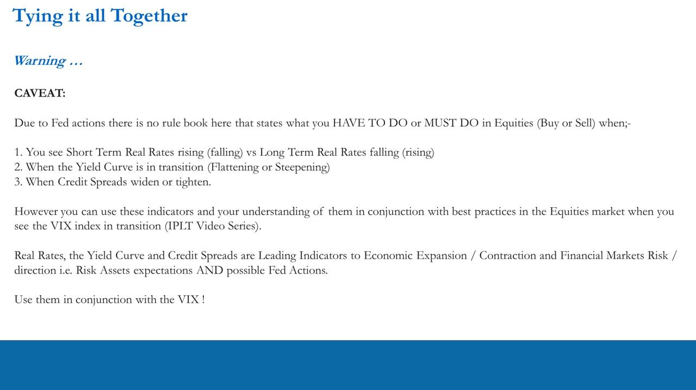
Glossary
- Corporate bondDebt issued by a company to raise capital; the investor lends principal and receives coupons over the maturity, with principal repaid at maturity. Yields at a premium to government bonds for default risk.
- Credit spreadThe premium (in yield) at which a corporate bond trades over the benchmark 10-year Treasury. It prices default risk and is a leading indicator to GDP, earnings and equities.
- Investment gradeRatings AAA down to BBB (Moody's Aaa to Baa3) — the higher-quality tier of corporate credit, with tighter spreads.
- Junk / non-investment grade / high yieldRatings below investment grade; high yield begins at BB+. CCC or lower is the 'junkiest of the junk' with the highest default risk and the largest, fastest-moving spreads.
- OAS (option-adjusted spread)A credit spread over the benchmark adjusted for bonds' embedded options; the ICE BofA BBB and CCC OAS series are published free on FRED.
- DCF transmissionThe mechanism by which spreads move equities: a wider spread raises the cost of corporate debt, lowering expected future cash flows and therefore present value (equity valuations), and vice versa.